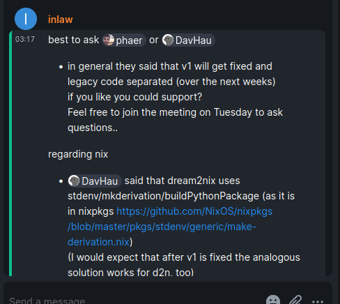

Packaging Openstack on Nixos
What is all this?
What is hyperconverged infrastrucuture?
Hyperconverged infrastrucucture, is when multiple aspects of computing can all be managed from the same platform. This is usually done with virtualization, like virtualized servers, or virtualized storage.
Promox Virtual Environment is one of the most popular examples of this for homelabbers, or people who manage their own servers for personal use. It offers a web based interface to configure virtual machines, virtualized storage, and clustering. When researching what software to use to manage my server, I considered proxmox.
Proxmox is based on debian linux, and is very tightly integrated into that ecosystem. It is nearly impossible to run proxmox on any other linux distro, and I disliked this inflexibility.
Openstack is an open source, public and private cloud solution, containing hyperconverged infrastructure, and more. It’s used when people don’t want to rely on external cloud solutions, like Amazon Web Services (AWS). For example, a university may decide that it is cheaper to manage and maintain their own cloud than to rely on AWS.
Openstack is massive, consisting of multiple components that must be installed and configured independently of eachother, yet set up to work with eachother. Becuase of this, openstack is usually deployed as configuration as code. The two most popular solutions, from my research, openstack-ansible, and kolla-ansible, work by deploying containerized, preconfigured installs of openstack, that connect to the bare metal portions of the system through standardized API’s like libvirt, which are easy to configure on the base system using ansible. On the other hand, because openstack is much more complex, it is easy to simply make a preconfigured container image, and distribute it out for people to use.
What is Nixos?
Nixos is an operating system that uses the nix package manager to install packages, but also the nix language for configuration. Because of this, it is a form of configuration as code.
For example, I used nix’s ability to create a shell environment to create a shell environment with quarto on linux
I asked, and searched around, looking for if there was a Nixos way to set up something like proxmox or openstack.
I first asked, but then I realized that I could search github for the nix programming language, and keywords I desired. I did so, and I found someone’s lxdware configurations
Show someone else’s configs for lxdware on nixos
{ config, pkgs, lib, ... }: {
systemd.services.docker-create-network-lxdware = {
enable = true;
description = "Create lxdware docker network";
path = [ pkgs.docker ];
serviceConfig = {
Type = "oneshot";
RemainAfterExit = "yes";
ExecStart = pkgs.writeScript "docker-create-network-lxdware" ''
#! ${pkgs.runtimeShell} -e
${pkgs.docker}/bin/docker network create lxdware || true
'';
};
after = [ "network-online.target" ];
wantedBy = [ "multi-user.target" ];
};
virtualisation.oci-containers.containers."lxdware" = {
autoStart = true;
image = "docker.io/lxdware/dashboard:latest";
volumes = [ "/services/lxdware/lxdware:/var/lxdware" ];
dependsOn = [ "create-network-lxdware" ];
extraOptions = [
# networks
"--network=lxdware"
# labels
"--label"
"traefik.enable=true"
"--label"
"traefik.docker.network=lxdware"
"--label"
"traefik.http.routers.lxdware.rule=Host(`lxd.local.bspwr.com`)"
"--label"
"traefik.http.routers.lxdware.entrypoints=websecure"
"--label"
"traefik.http.routers.lxdware.tls=true"
"--label"
"traefik.http.routers.lxdware.tls.certresolver=letsencrypt"
"--label"
"traefik.http.routers.lxdware.service=lxdware"
"--label"
"traefik.http.routers.lxdware.middlewares=local-allowlist@file, default@file"
"--label"
"traefik.http.services.lxdware.loadbalancer.server.port=80"
];
};
}Lxdware is a web based frontend for LXD, a type of hyperconverged infrastructure. LXD is a daemon, or background process, for managing containers (ran via LXC), virtual machines, and to an extent, virtualized storage. It appealed to me, when I was searching for a hyperconverged infrastructure solution for my home lab.

It’s feature rich, and mature. However, I dislike the particular implementation used in the above configuration. They ran lxdware, in a docker container. This works, and probably works well, but this isn’t a very nixos way of doing things. Nix offers reproducibility, so docker isn’t needed, and is generally frowned upon because it brings some disadvantages. I wanted to configure lxdware using nix myself.
I later looked at openstack, because I wanted to see if there was an ideal way to configure this with nixos. Nix makes it so easy to configure so many other services, just a few lines of nix code in the configuration.nix file to set up webservers, or other services.
In fact, people even discussed this in a thread posted on the Nixos discourse forums
Is there anyone actively working on being able to run an OpenStack cloud using NixOS? Shouldn’t “we” be able to do what the Kayobe project does but without the Ansible stuff? https://docs.openstack.org/kayobe/latest/configuration/reference/kolla-ansible.html 9
One person replied, saying that they had done a bit, but work had “rotten since”. And indeed, when I searched around github, I found an old project, in a github repo titled nixstack
This person, or group of people, had packaged openstack to be easy to enable. But as I read through the code, I realized that the app is from the era of python2, so this code is really old.
The actual project
So I decided to package it myself. At least, that’s my goal. It seems to be a massive project, but one user already did it, when I asked around on the discord.

They claimed they will open source it soon-ish, but right now, none of their work is public.
So I decided to do it myself. I have the old templates as my guides, and I know it is possible because someone else has done it.
After going through the code for nixstack, I experienced a pleasant suprise — openstack is purely a python application, and this means that it can be packages by nix’s python packaging ecosystem.
Because openstack is purely a python application, all the dependencies are declared in the requirements.txt, located in the root of the git repo of each openstack component.
Nixpkgs very large, but I don’t know if they have all of the python packages. Luckily, I found a newer project, pip2nix, which seems to have been first created at around the same time the openstack on nix projects stopped development.
I should be able to convert a requirements.txt into something nix can install natively, directly from the pypi repos, without having to worry about packages not being packages in nixpkgs.
So I started by cloning the openstack keystone repository from github: https://github.com/openstack/keystone
Pip2nix
I install and setup pip2nix and attempt to use it. It first complains about python36 being too old, but after I switch to the python39 version of pip2nix:
[nix-shell:~/vscode/keystone]$ pip2nix generate .
Processing /home/moonpie/vscode/keystone
... # lots of extraneous outputpip2nix generate seems to take the same inputs as pip, so to install a python package from the current working directory, you could usually do pip install ., but here I do a pip2nix generate . instead. This generates a python-packages.nix file with all the python packages, including openstack keystone.
I played around with trying to install openstack keystone in a nix-shell environment.
{
pkgs ? import <nixpkgs> {}
} :
with import ./python-packages.nix {inherit pkgs;};
let
keystone-nix = callPackage keystone;
in
pkgs.mkShell {
packages = [ keystone-nix ];
}Show error
moonpie@localhost:~/vscode/keystone> nix-shell
error:
… while calling the 'derivationStrict' builtin
at /builtin/derivation.nix:9:12: (source not available)
… while evaluating derivation 'nix-shell'
whose name attribute is located at /nix/store/q300rswsxpr2kkng9azzsbfi9m8fdg50-nixpkgs/nixpkgs/pkgs/stdenv/generic/make-derivation.nix:303:7
… while evaluating attribute 'nativeBuildInputs' of derivation 'nix-shell'
at /nix/store/q300rswsxpr2kkng9azzsbfi9m8fdg50-nixpkgs/nixpkgs/pkgs/stdenv/generic/make-derivation.nix:347:7:
346| depsBuildBuild = lib.elemAt (lib.elemAt dependencies 0) 0;
347| nativeBuildInputs = lib.elemAt (lib.elemAt dependencies 0) 1;
| ^
348| depsBuildTarget = lib.elemAt (lib.elemAt dependencies 0) 2;
error: function 'anonymous lambda' called without required argument 'fetchurl'
at /home/moonpie/vscode/keystone/python-packages.nix:4:1:
3|
4| { pkgs, fetchurl, fetchgit, fetchhg }:
| ^
5|I remember getting a similar error when I was trying to package quarto, and I was told to use callPackage. I don’t think I am using callPackage correctly here.
I tried tinkering with some code that I got from searching github
{
pkgs ? import <nixpkgs> {}
} :
with pkgs;
let
python = python3;
pythonPackages = python.pkgs;
# generated with `pip2nix generate -r requirements.txt`
generatePipPackages = import ./python-packages.nix {
inherit pkgs;
inherit (pkgs) fetchurl fetchgit fetchhg;
};
pipPackages = generatePipPackages pipPackages pythonPackages;
in
pkgs.mkShell {
packages = with pipPackages; [ keystone ];
}But this errors:
Show error
moonpie@localhost:~/vscode/keystone> nix-shell
error:
… while calling the 'derivationStrict' builtin
at /builtin/derivation.nix:9:12: (source not available)
… while evaluating derivation 'nix-shell'
whose name attribute is located at /nix/store/q300rswsxpr2kkng9azzsbfi9m8fdg50-nixpkgs/nixpkgs/pkgs/stdenv/generic/make-derivation.nix:303:7
… while evaluating attribute 'nativeBuildInputs' of derivation 'nix-shell'
at /nix/store/q300rswsxpr2kkng9azzsbfi9m8fdg50-nixpkgs/nixpkgs/pkgs/stdenv/generic/make-derivation.nix:347:7:
346| depsBuildBuild = lib.elemAt (lib.elemAt dependencies 0) 0;
347| nativeBuildInputs = lib.elemAt (lib.elemAt dependencies 0) 1;
| ^
348| depsBuildTarget = lib.elemAt (lib.elemAt dependencies 0) 2;
(stack trace truncated; use '--show-trace' to show the full trace)
error: attribute 'setuptools' missing
at /home/moonpie/vscode/keystone/python-packages.nix:106:7:
105| propagatedBuildInputs = [
106| self."setuptools"
| ^
107| self."six"I don’t really know why this errors. o this is good advice. I just graduated, and although I have an internship I will need to do this anix-shell error: … in the left operand of the update (//) operator
at /nix/store/q300rswsxpr2kkng9azzsbfi9m8fdg50-nixpkgs/nixpkgs/lib/fixed-points.nix:69:64:
68| #
69| extends = f: rattrs: self: let super = rattrs self; in super // f self super;
| ^
70|
… in the left operand of the update (//) operator
at /nix/store/q300rswsxpr2kkng9azzsbfi9m8fdg50-nixpkgs/nixpkgs/lib/fixed-points.nix:69:64:
68| #
69| extends = f: rattrs: self: let super = rattrs self; in super // f self super;
| ^
70|
(stack trace truncated; use '--show-trace' to show the full trace)
error: function 'anonymous lambda' called with unexpected argument 'self'
at /nix/store/q300rswsxpr2kkng9azzsbfi9m8fdg50-nixpkgs/nixpkgs/pkgs/development/interpreters/python/passthrufun.nix:37:6:
36| # - applies overrides from `packageOverrides` and `pythonPackagesOverlays`.
37| ({ pkgs, stdenv, python, overrides }: let
| ^
38| pythonPackagesFun = import ./python-packages-base.nix {
</details>
I literally changed nothing. Except for adding setuptools to the start of the requirements.txt, but I still got a differing error than the one I got yesterday.
I recloned the keystone repo (reverting back to the default requirements.txt file), and regenerated the nix files using pip2nix, however I still get the same error. Weird.
2 days later, I still get the same error. So I decided to try another tool. Although I am aware that I could, in theory package every python package manually, I have opted not to do that when programattic solutions exist. Manual packaging is a last resort.
## Mach-nix
### Flying Blind
So I tried another tool, [mach-nix](https://github.com/DavHau/mach-nix), which is unmaintained, but worked when I tried it a little bit ago.
For some reason, trying to get the non-flake version of the package didn't work:
<details><summary>Show error</summary>
```{.default .code-overflow-wrap}
moonpie@localhost:~/vscode/keystone> nix-shell -p '(callPackage (fetchTarball https://github.com/DavHau/mach-nix/tarball/3.5.0) {}).mach-nix'
this derivation will be built:
/nix/store/71qql4471m8m5js7l1rwnd5m1aizd8m8-mach-nix-master.drv
building '/nix/store/71qql4471m8m5js7l1rwnd5m1aizd8m8-mach-nix-master.drv'...
Sourcing python-remove-tests-dir-hook
Sourcing python-catch-conflicts-hook.sh
...
...
/nix/store/74l4x6m97bvry7ccxv51h952ayvg2j46-stdenv-linux/setup: line 1596: pop_var_context: head of shell_variables not a function context
error: builder for '/nix/store/71qql4471m8m5js7l1rwnd5m1aizd8m8-mach-nix-master.drv' failed with exit code 1;
last 10 log lines:
> File "/nix/store/pv3psrncam37dc8n1v2q80jfvnw601ln-python3.9-setuptools-67.4.0/lib/python3.9/site-packages/setuptools/_distutils/cmd.py", line 305, in get_finalized_command
> cmd_obj.ensure_fio this is good advice. I just graduated, and although I have an internship I will need to do this ations()
> File "/nix/store/pv3psrncam37dc8n1v2q80jfvnw601ln-python3.9-setuptools-67.4.0/lib/python3.9/site-packages/setuptools/command/egg_info.py", line 220, in finalize_options
> parsed_version = packaging.version.Version(self.egg_version)
> File "/nix/store/pv3psrncam37dc8n1v2q80jfvnw601ln-python3.9-setuptools-67.4.0/lib/python3.9/site-packages/setuptools/_vendor/packaging/version.py", line 197, in __init__
> raise InvalidVersion(f"Invalid version: '{version}'")
> setuptools.extern.packaging.version.InvalidVersion: Invalid version: 'master'
> /nix/store/74l4x6m97bvry7ccxv51h952ayvg2j46-stdenv-linux/setup: line 1596: pop_var_context: head of shell_variables not a function context
For full logs, run 'nix-store -l /nix/store/71qql4471m8m5js7l1rwnd5m1aizd8m8-mach-nix-master.drv'.So I had to use the flake version of mach-nix
moonpie@localhost:~/vscode/keystone> nix shell github:DavHau/mach-nix
moonpie@localhost:~/vscode/keystone> mach-nix env ./env -r requirements.txt
path is '/nix/store/ahaz90hy6lins0a56mdivrd2fjj3rcb5-554d2d8aa25b6e583575459c297ec23750adb6cb'
Initialized python environment in: ./env
To change python requirements, modify the file: ./env/requirements.txt
To activate the environment, execute: nix-shell ./envHowever, when I actually tried to activate the environment, it simply stalled forever, until I forcefully exited the program using Control + C. After which, it would spit out an error:
moonpie@localhost:~/vscode/keystone> nix-shell ./env
^Cerror:
… while calling the 'derivationStrict' builtin
at /builtin/derivation.nix:9:12: (source not available)
… while evaluating derivation 'nix-shell'
whose name attribute is located at /nix/store/5n402azp0s9vza4rziv4z5y88v2cv1mq-nixpkgs/pkgs/stdenv/generic/make-derivation.nix:205:7
… while evaluating attribute 'buildInputs' of derivation 'nix-shell'
at /nix/store/5n402azp0s9vza4rziv4z5y88v2cv1mq-nixpkgs/pkgs/stdenv/generic/make-derivation.nix:247:7:
246| depsHostHost = lib.elemAt (lib.elemAt dependencies 1) 0;
247| buildInputs = lib.elemAt (lib.elemAt dependencies 1) 1;
| ^
248| depsTargetTarget = lib.elemAt (lib.elemAt dependencies 2) 0;
(stack trace truncated; use '--show-trace' to show the full trace)
error: download of 'https://github.com/DavHau/pypi-deps-db/tarball/e00b22ead9d3534ba1c448e1af3076af6b234acf' was interruptedI could report an issue, but I decided to simply try the new project that the developer is working on instead, dream2nix.
A kind user helped me.
A user on matrix responded to me asking for help with dream2nix
They said:
Have you tried to use mach-nix pinned to rev = “65266b5cc867fec2cb6a25409dd7cd12251f6107”; and versionPy ? “39” to use the req.txt file from keystone 23.0.0 (works for me)
So I created a small shell.nix to that simply calls my derivation:
shell.nix
{
pkgs ? import <nixpkgs> {},
} :
let
okeystone = pkgs.callPackage ./keystone.nix {}; # okeystone becuase packages with the name keystone already exists.
in
pkgs.mkShell {
packages = with pkgs; [ okeystone ];
}And my derivation
Show derivation
keystone.nix
{
nixpkgs ? import <nipxkgs>,
#fetchFromGithub,
fetchgit,
python3
} :
let
mach-nix = import (fetchgit {
url = "https://github.com/DavHau/mach-nix";
rev = "65266b5cc867fec2cb6a25409dd7cd12251f6107";
sha256 = "sha256-1OBBlBzZ894or8eHZjyADOMnGH89pPUKYGVVS5rwW/0=";
}) {};
in
mach-nix.buildPythonApplication {
pname = "keystone";
version = "placeholder";
src = fetchgit {
url = "https://github.com/openstack/keystone/";
rev = "040e6d09b1e7e6817c81209c2b089d318715bef6";
};
}And I get the same error as above, after I forcefully quit the stalled program.
I realized a little bit later that I forgot to declare versionPy ? "39".
Later, I finally made some progress.
Show
keystone.nix
{
pkgs ? import <nipxkgs> {},
#pkgs ? (import fetchtarball {"https://github.com/nixos/nixpkgs/archive/f10cdcf31dd2a436edbf7f0ad82c44b911804bc8.tar.gz"}),
fetchgit,
versionPy ? "39"
} :
let
#python = pkgs."python${versionPy}Full";
#pythonPackages = pkgs."python${versionPy}Packages";
mach-nix = import (fetchGit {
url = "https://github.com/DavHau/mach-nix";
rev = "65266b5cc867fec2cb6a25409dd7cd12251f6107";
#sha256 = "sha256-1OBBlBzZ894or8eHZjyADOMnGH89pPUKYGVVS5rwW/0=";
}) {
python = "python39";
pythonPackages = "python39Packages";
pypiDataRev = "e9571cac25d2f509e44fec9dc94a3703a40126ff";
pypiDataSha256 = "1rbb0yx5kjn0j6lk0ml163227swji8abvq0krynqyi759ixirxd5";
};
in
mach-nix.buildPythonApplication {
pname = "keystone";
version = "placeholder";
src = fetchgit {
url = "https://github.com/openstack/keystone/";
rev = "040e6d09b1e7e6817c81209c2b089d318715bef6";
sha256 = "sha256-qQgGh0WwEDSYQC1PDnSDp3RUiWoFjV5SCjw0SiUlJtk=";
};
}This doesn’t fail instantly, but rather does some stuff before giving me a differing, but easy to understand error.
Show error
moonpie@localhost:~/vscode/moonpiedumplings.github.io/projects/openstack-on-nixos/mach-nix> nix-shell
building '/nix/store/lwpd31yfdr3jcpi8f1ik21dgyhp063iw-python3-3.9.9-env.drv'...
created 223 symlinks in user environment
building '/nix/store/iag09dlfh5z4l4f5zq87f38wpwqhdg5h-python3-3.9.9-env-patched.drv'...
File /nix/store/jzlvmms4bxkqscd2akcfhwwdj2668sjp-python3-3.9.9-env-patched/lib/python3.9/distutils/core.py is read-only; trying to patch anyway
patching file /nix/store/jzlvmms4bxkqscd2akcfhwwdj2668sjp-python3-3.9.9-env-patched/lib/python3.9/distutils/core.py
/nix/store/jzlvmms4bxkqscd2akcfhwwdj2668sjp-python3-3.9.9-env-patched/lib/python3.9/site-packages/setuptools/__init__.py
File /nix/store/jzlvmms4bxkqscd2akcfhwwdj2668sjp-python3-3.9.9-env-patched/lib/python3.9/site-packages/setuptools/__init__.py is read-only; trying to patch anyway
patching file /nix/store/jzlvmms4bxkqscd2akcfhwwdj2668sjp-python3-3.9.9-env-patched/lib/python3.9/site-packages/setuptools/__init__.py
Hunk #1 succeeded at 239 (offset -12 lines).
building '/nix/store/zj70xbgg1gm8kils98insy3xzjzmphqx-package-requirements.drv'...
unpacking sources
unpacking source archive /nix/store/22jqj6c8na5k547qjrhlpjpagzq3wvhc-keystone-040e6d0
source root is keystone-040e6d0
installing
extracting dependencies
error:
… while calling the 'derivationStrict' builtin
at /builtin/derivation.nix:9:12: (source not available)
… while evaluating derivation 'nix-shell'
whose name attribute is located at /nix/store/q300rswsxpr2kkng9azzsbfi9m8fdg50-nixpkgs/nixpkgs/pkgs/stdenv/generic/make-derivation.nix:303:7
… while evaluating attribute 'nativeBuildInputs' of derivation 'nix-shell'
at /nix/store/q300rswsxpr2kkng9azzsbfi9m8fdg50-nixpkgs/nixpkgs/pkgs/stdenv/generic/make-derivation.nix:347:7:
346| depsBuildBuild = lib.elemAt (lib.elemAt dependencies 0) 0;
347| nativeBuildInputs = lib.elemAt (lib.elemAt dependencies 0) 1;
| ^
348| depsBuildTarget = lib.elemAt (lib.elemAt dependencies 0) 2;
(stack trace truncated; use '--show-trace' to show the full trace)
error: Automatic requirements extraction failed for keystone:placeholder.
Please manually specify 'requirements'Clear, and easy to understand. For whatever reason, mach-nix is unable to get requirements.txt from keystone, and it wants me to manually specify them.
I will see if there is a way to get around this.
So I found a way to get around this:
mach-nix.buildPythonApplication rec {
pname = "keystone";
version = "placeholder";
src = fetchgit {
url = "https://github.com/openstack/keystone/";
rev = "040e6d09b1e7e6817c81209c2b089d318715bef6";
sha256 = "sha256-qQgGh0WwEDSYQC1PDnSDp3RUiWoFjV5SCjw0SiUlJtk=";
};
requirements = builtins.readFile "${src}/requirements.txt";
}But of course, this still errors.
After a lot of compiling and building, I get this:
Show error
ERROR:root:Error parsing
Traceback (most recent call last):
File "/nix/store/bksvs9irxl40bnm126sdnhxam0rzidby-python3.9-pbr-5.11.0/lib/python3.9/site-packages/pbr/core.py", line 111, in pbr
attrs = util.cfg_to_args(path, dist.script_args)
File "/nix/store/bksvs9irxl40bnm126sdnhxam0rzidby-python3.9-pbr-5.11.0/lib/python3.9/site-packages/pbr/util.py", line 272, in cfg_to_args
pbr.hooks.setup_hook(config)
File "/nix/store/bksvs9irxl40bnm126sdnhxam0rzidby-python3.9-pbr-5.11.0/lib/python3.9/site-packages/pbr/hooks/__init__.py", line 25, in setup_hook
metadata_config.run()
File "/nix/store/bksvs9irxl40bnm126sdnhxam0rzidby-python3.9-pbr-5.11.0/lib/python3.9/site-packages/pbr/hooks/base.py", line 27, in run
self.hook()
File "/nix/store/bksvs9irxl40bnm126sdnhxam0rzidby-python3.9-pbr-5.11.0/lib/python3.9/site-packages/pbr/hooks/metadata.py", line 25, in hook
self.config['version'] = packaging.get_version(
File "/nix/store/bksvs9irxl40bnm126sdnhxam0rzidby-python3.9-pbr-5.11.0/lib/python3.9/site-packages/pbr/packaging.py", line 874, in get_version
raise Exception("Versioning for this project requires either an sdist"
Exception: Versioning for this project requires either an sdist tarball, or access to an upstream git repository. It's also possible that there is a mismatch between the package name in setup.cfg and the argument given to pbr.version.VersionInfo. Project name keystone was given, but was not able to be found.
error in setup command: Error parsing /build/keystone-040e6d0/setup.cfg: Exception: Versioning for this project requires either an sdist tarball, or access to an upstream git repository. It's also possible that there is a mismatch between the package name in setup.cfg and the argument given to pbr.version.VersionInfo. Project name keystone was given, but was not able to be found.
error: builder for '/nix/store/gyj2647z1nk1g0dq5wh8jbf1lhv91b9x-python3.9-keystone-placeholder.drv' failed with exit code 1;
last 10 log lines:
> File "/nix/store/bksvs9irxl40bnm126sdnhxam0rzidby-python3.9-pbr-5.11.0/lib/python3.9/site-packages/pbr/hooks/__init__.py", line 25, in setup_hook
> metadata_config.run()
> File "/nix/store/bksvs9irxl40bnm126sdnhxam0rzidby-python3.9-pbr-5.11.0/lib/python3.9/site-packages/pbr/hooks/base.py", line 27, in run
> self.hook()
> File "/nix/store/bksvs9irxl40bnm126sdnhxam0rzidby-python3.9-pbr-5.11.0/lib/python3.9/site-packages/pbr/hooks/metadata.py", line 25, in hook
> self.config['version'] = packaging.get_version(
> File "/nix/store/bksvs9irxl40bnm126sdnhxam0rzidby-python3.9-pbr-5.11.0/lib/python3.9/site-packages/pbr/packaging.py", line 874, in get_version
> raise Exception("Versioning for this project requires either an sdist"
> Exception: Versioning for this project requires either an sdist tarball, or access to an upstream git repository. It's also possible that there is a mismatch between the package name in setup.cfg and the argument given to pbr.version.VersionInfo. Project name keystone was given, but was not able to be found.
> error in setup command: Error parsing /build/keystone-040e6d0/setup.cfg: Exception: Versioning for this project requires either an sdist tarball, or access to an upstream git repository. It's also possible that there is a mismatch between the package name in setup.cfg and the argument given to pbr.version.VersionInfo. Project name keystone was given, but was not able to be found.
For full logs, run 'nix-store -l /nix/store/gyj2647z1nk1g0dq5wh8jbf1lhv91b9x-python3.9-keystone-placeholder.drv'.At least the error is explicit. I will look into this more later.
I found something that worked. Looking at the old nixstack code, there is an attribute that can be set:
PBR_VERSION = "${version}";
and this works. My current keystone.nix:
keystone.nix
{
pkgs ? import <nipxkgs> {},
#pkgs ? (import fetchtarball {"https://github.com/nixos/nixpkgs/archive/f10cdcf31dd2a436edbf7f0ad82c44b911804bc8.tar.gz"}),
fetchgit,
fetchPypi,
#fetchFromGitHub,
versionPy ? "39",
} :
let
#python = pkgs."python${versionPy}Full";
#pythonPackages = pkgs."python${versionPy}Packages";
mach-nix = import (fetchgit {
url = "https://github.com/DavHau/mach-nix";
rev = "65266b5cc867fec2cb6a25409dd7cd12251f6107";
sha256 = "sha256-1OBBlBzZ894or8eHZjyADOMnGH89pPUKYGVVS5rwW/0=";
}) {
python = "python39";
pythonPackages = "python39Packages";
pypiDataRev = "e9571cac25d2f509e44fec9dc94a3703a40126ff";
pypiDataSha256 = "1rbb0yx5kjn0j6lk0ml163227swji8abvq0krynqyi759ixirxd5";
};
in
mach-nix.buildPythonPackage rec {
pname = "keystone";
version = "23.0.0";
PBR_VERSION = "${version}";
src = builtins.fetchGit {
url = "https://github.com/openstack/keystone/";
ref = "refs/tags/23.0.0";
rev = "c08d97672dcd40f8d927f91e59049053cfe3b5e4";
};
requirements = builtins.readFile "${src}/requirements.txt";
}But I don’t really want to use mach-nix, as it is unmaintained. I will see if there is a way to set this up with dream2nix.
For those trying to help me, here is a live version, updated every git push, of the files I am working on, because I don’t usually update my blog as I work on things, only after.
Show
shell.nix
{
pkgs ? import <nixpkgs> {},
} :
let
okeystone = pkgs.callPackage ./keystone.nix {};
in
pkgs.mkShell {
packages = with pkgs; [ okeystone ];
}keystone.nix
{
pkgs ? import <nipxkgs> {},
#pkgs ? (import fetchtarball {"https://github.com/nixos/nixpkgs/archive/f10cdcf31dd2a436edbf7f0ad82c44b911804bc8.tar.gz"}),
fetchgit,
fetchPypi,
#fetchFromGitHub,
versionPy ? "39",
} :
let
#python = pkgs."python${versionPy}Full";
#pythonPackages = pkgs."python${versionPy}Packages";
mach-nix = import (fetchgit {
url = "https://github.com/DavHau/mach-nix";
rev = "65266b5cc867fec2cb6a25409dd7cd12251f6107";
sha256 = "sha256-1OBBlBzZ894or8eHZjyADOMnGH89pPUKYGVVS5rwW/0=";
}) {
python = "python39";
pythonPackages = "python39Packages";
pypiDataRev = "e9571cac25d2f509e44fec9dc94a3703a40126ff";
pypiDataSha256 = "1rbb0yx5kjn0j6lk0ml163227swji8abvq0krynqyi759ixirxd5";
};
in
mach-nix.buildPythonPackage rec {
pname = "keystone";
version = "23.0.0";
PBR_VERSION = "${version}";
/*src = fetchgit {
url = "https://github.com/openstack/keystone/";
rev = "040e6d09b1e7e6817c81209c2b089d318715bef6";
sha256 = "sha256-qQgGh0WwEDSYQC1PDnSDp3RUiWoFjV5SCjw0SiUlJtk=";
};*/
/*src = fetchTarball {
url = "https://github.com/openstack/keystone/archive/eff960e124e2f28922067800547e23f1931d3c4a.tar.gz";
sha256 = "";
};*/
src = builtins.fetchGit {
url = "https://github.com/openstack/keystone/";
ref = "refs/tags/23.0.0";
rev = "c08d97672dcd40f8d927f91e59049053cfe3b5e4";
#sha256 = "sha256-JYP29APY27BpX9GSyayW/y7rskdn8zW5mVsjdBXjCus=";
};
/*src = fetchPypi {
inherit pname version;
sha256 = "sha256-t0ravo9+H2nYcoGkvoxn5YxHOTf68vSon+VTJFn6INY=";
};*/
/*src = fetchFromGitHub {
owner = "openstack";
repo = "keystone";
tag = "23.0.0";
};*/
/*src = fetchTarball {
url = "https://github.com/openstack/keystone/archive/refs/tags/23.0.0.tar.gz";
sha256 = "";
};*/
#src = /home/moonpie/vscode/keystone; # currently in correct tag
requirements = builtins.readFile "${src}/requirements.txt";
}Dream2nix
I decided to follow the their python project instructions.
Show error
moonpie@localhost:~/vscode/keystone> nix run .#resolveImpure
warning: Git tree '/home/moonpie/vscode/keystone' is dirty
Resolving:: Name: main; Subsystem: python; relPath:
/tmp/tmp.rB9TAH7neG ~/vscode/keystone
reading setup requirements from pyproject.toml
Error: [Errno 2] No such file or directory: './source/pyproject.toml'
install setup dependencies from extraSetupDeps
[notice] A new release of pip available: 22.2.2 -> 23.1.2
[notice] To update, run: /nix/store/w3lza2zk3i6xi1x5rh5zbwc9zlfsymc0-python3-3.10.7-env/bin/python3.10 -m pip install --upgrade pip
download setup dependencies from pyproject.toml
[notice] A new release of pip available: 22.2.2 -> 23.1.2
[notice] To update, run: /nix/store/w3lza2zk3i6xi1x5rh5zbwc9zlfsymc0-python3-3.10.7-env/bin/python3.10 -m pip install --upgrade pip
download files according to requirements
realpath: ./install/lib/python3.10/site-packages: No such file or directory
Processing ./source
Preparing metadata (setup.py) ... error
error: subprocess-exited-with-error
× python setup.py egg_info did not run successfully.
│ exit code: 1
╰─> [19 lines of output]
/nix/store/w3lza2zk3i6xi1x5rh5zbwc9zlfsymc0-python3-3.10.7-env/lib/python3.10/site-packages/setuptools/installer.py:27: SetuptoolsDeprecationWarning: setuptools.installer is deprecated. Requirements should be satisfied by a PEP 517 installer.
warnings.warn(
WARNING: The wheel package is not available.
Error parsing
Traceback (most recent call last):
File "/tmp/tmp.rB9TAH7neG/source/.eggs/pbr-5.11.1-py3.10.egg/pbr/core.py", line 105, in pbr
attrs = util.cfg_to_args(path, dist.script_args)
File "/tmp/tmp.rB9TAH7neG/source/.eggs/pbr-5.11.1-py3.10.egg/pbr/util.py", line 272, in cfg_to_args
pbr.hooks.setup_hook(config)
File "/tmp/tmp.rB9TAH7neG/source/.eggs/pbr-5.11.1-py3.10.egg/pbr/hooks/__init__.py", line 25, in setup_hook
metadata_config.run()
File "/tmp/tmp.rB9TAH7neG/source/.eggs/pbr-5.11.1-py3.10.egg/pbr/hooks/base.py", line 27, in run
self.hook()
File "/tmp/tmp.rB9TAH7neG/source/.eggs/pbr-5.11.1-py3.10.egg/pbr/hooks/metadata.py", line 25, in hook
self.config['version'] = packaging.get_version(
File "/tmp/tmp.rB9TAH7neG/source/.eggs/pbr-5.11.1-py3.10.egg/pbr/packaging.py", line 874, in get_version
raise Exception("Versioning for this project requires either an sdist"
Exception: Versioning for this project requires either an sdist tarball, or access to an upstream git repository. It's also possible that there is a mismatch between the package name in setup.cfg and the argument given to pbr.version.VersionInfo. Project name keystone was given, but was not able to be found.
error in setup command: Error parsing /tmp/tmp.rB9TAH7neG/source/setup.cfg: Exception: Versioning for this project requires either an sdist tarball, or access to an upstream git repository. It's also possible that there is a mismatch between the package name in setup.cfg and the argument given to pbr.version.VersionInfo. Project name keystone was given, but was not able to be found.
[end of output]
note: This error originates from a subprocess, and is likely not a problem with pip.
error: metadata-generation-failed
× Encountered error while generating package metadata.
╰─> See above for output.
note: This is an issue with the package mentioned above, not pip.
hint: See above for details.
[notice] A new release of pip available: 22.2.2 -> 23.1.2
[notice] To update, run: /nix/store/w3lza2zk3i6xi1x5rh5zbwc9zlfsymc0-python3-3.10.7-env/bin/python3.10 -m pip install --upgrade pipAnd an error. Interestingly, this is the exact same error that I got with mach-nix. This means that the error proabbly has the same solution, and if I find it, I’d like to stick to dream2nix is it is actively maintained, unlike mach-nix.
So I started doing some research. The first thing was something another user on matrix sent to me, a stackoverflow post
This post had several interesting ramifications. I was recommended to attempt to set the version of keystone using an environment variable, but I noticed that PBR, the tool used to build/install keystone, should be able to get teh current version from git tags, without that hassle. So I did more research as to why this wasn’t working.
I found a keystone specific bug, on launchpad, a bug reporting site. Someone not using nix encountered my exact error. Linked below was a fix, created and merged into other openstack repos, but not the keystone one. Apparently, git was changed in such a way that it cannot do any operations on a repo not owned by the current user, in order to fix a security vulnerability. This may not bug normal users, but with nix, the git repo is downloaded into the nix store, where is is owned by the root user. Then, the nixbld user’s operate on the store paths and files. This means that nix is probably encountering this specific git behavior. I am guessing my next step is do do something that makes it okay for git to operate on git repo’s not owned by the current user.
You should be able to adjust git configs to add “safe” directories, that is, declare directories that are ok to operate on not by the current user.
One stackoverflow answer recommended this:
git config --global --add safe.directory *
But this edits the git configuration files for that user. There might be a way to edit just for that repository, since git stores some configs in the repo itself, but I doubt that, as that creates a very easy workaround for the fix designed to squash the security issue.
There is the git config --system option, but if I ran that inside of a nix chroot, where would it store it?
Maybe I could use a modified version of git with nix?
Another thing to consider is, for the dream2nix approach, does it store a copy of the repository in the nix store, or does it work directly on the repository I run it in?
Previously, I had run this all on my newer laptop, which has a multi user install, meaning the /nix directory is owned by root, and the nixbld* user’s do the operations. However, I decided to try it on my other laptop, which has a single user nix install. This means that the nix store is owned by my user moonpie, and the operations are also done by my user, moonpie. However, I encountered the same error.
Okay, I don’t need to mess with git, I just need to set the PBR_VERSION environment variable. How can I set environment variables with dream2nix?
Okay, so on the matrix thread where I am being helped, I received this as a reply when I asked how to set up environment variables in dream2nix:

Basically, dream2nix doesn’t have this feature yet. I don’t know where I am going to go from here. I think I should simply wait until dream2nix is more mature, and put this project on hold, although I might see if there is a way to hack it, although my understanding of the nix langauge is still lacking.
Poetry2nix
Poetry is a python dependency manager similar to nix. poetry2nix uses poetry’s specifications to do things like download package, package applications, or create shell environments using nix.
First I needed to convert the requirements.txt to poetry.
I used the dephell tool to do so. Specifically, dephell deps convert
dephell deps convert --from pip --to poetry
After that, I used poetry2nix to create a shell environment, to test if the dependencies were downloaded.
shell.nix
{
pkgs ? import <nixpkgs> {},
poetry2nix ? import <poetry2nix> {}
} :
poetry2nix.mkPoetryEnv {
projectDir = ./.;
}After that, using pip list to list the python packages that pip can see confirms that this works to download all dependencies.
But I don’t really like doing this, because dephell is depreceated. So I’m going to look into some other converion tools, tools to convert the pip file format/requirements.txt to the poetry file format/pyproject.toml.
| Project | Notes |
|---|---|
| dephell | Works, but is archive/unmaintained, and complains about a piece being deprecated when ran… |
| stanza | Last commit was a year ago |
| poeareq | maintained by one person, last commit a year ago. Present in pypi |
| tigerhawk’s gist | just a github gist, a user complimented in a comment one month ago. But the script was last updated in 2019 |
| various shell one liners | provided by stackoverflow. They work, but are hacky, and apparently have edge cases they don’t cover. |
| pip-poetry-migration | untested/unresearched |
| poetry-import | untested/unresearched. In pypi. |
| poetrify | last updated 2 years ago. Says that requirements.txt is still in trial in description. |
| poetry import plugin | poetry plugin, so it may be easier to install/automate. Last updated 9 months ago. |
| micropipenv | I don’t know if it can actually do what I want. last updated 2 months ago. Maintained by Red Hat. |
Here is a live version of what I am working on for poetry, updated every git push.
Show
shell.nix
{
pkgs ? import <nixpkgs> {},
} :
let
okeystone = pkgs.callPackage ./keystone.nix {};
in
pkgs.mkShell {
packages = with pkgs; [ okeystone ];
}keystone.nix
{
pkgs ? import <nipxkgs> {},
#pkgs ? (import fetchtarball {"https://github.com/nixos/nixpkgs/archive/f10cdcf31dd2a436edbf7f0ad82c44b911804bc8.tar.gz"}),
#poetry2nix ? (import fetchtarball {"https://github.com/nix-community/poetry2nix/archive/215afa14f7077ca0610882d6d18ac3454f48fa65.tar.gz"}),
fetchgit,
} :
let
/*poetryConverter = src: pkgs.runCommand "${pkg.name}-nixgl-wrapper" {} ''
${pkgs.poetry}/bin/poetry self add poetry-plugin-import
mkdir $out
ln -s ${pkg}/* $out
rm $out/bin
mkdir $out/bin
'';*/
poetry2nix = import (builtins.fetchTarball {
url = "https://github.com/nix-community/poetry2nix/archive/215afa14f7077ca0610882d6d18ac3454f48fa65.tar.gz";
sha256 = "0k0blf48ln6bcj7c76cjjcdx41l1ygscpczi2k2d2vqv14a5bzan";
}) {};
in
poetry2nix.mkPoetryApplication {
/*src = fetchgit {
url = "https://github.com/openstack/keystone/";
rev = "040e6d09b1e7e6817c81209c2b089d318715bef6";
sha256 = "sha256-qQgGh0WwEDSYQC1PDnSDp3RUiWoFjV5SCjw0SiUlJtk=";
};
*/
src = "$HOME/vscode/keystone"; # Not gonna post anything online yet, espcially in such an alpha state.
}Packaging them myself
Okay, I did find something else interesting. When I was looking at one of the openstack dependencies, packaged in nixpkgs, I found something interesting in the meta section:
meta = with lib; {
description = "Oslo test framework";
homepage = "https://github.com/openstack/oslotest";
license = licenses.asl20;
maintainers = teams.openstack.members;
};For maintainers, nix has “teams,”” or groups of people dedicated to packaging a group of packages. And apparently, they seem to have an openstack team:
Sure enough, in the nixpkgs list of teams, they can be found:
openstack = {
members = [
emilytrau
SuperSandro2000
];
scope = "Maintain the ecosystem around OpenStack";
shortName = "OpenStack";
};These people maintain the ecosystem around openstack, but not openstack itself. Perhaps all openstack dependencies are already packaged?
I would probably have to do overrides on some of the depedencies to ensure that the versions are correct, since sometimes newer packages have breaking changes, but if stuff is already packaged, that would be great.
Here is the list of the packages from the requirements.txt. I will link each package to it’s equivalent in nixpkgs.
Show list
pbr!=2.1.0,>=2.0.0 # Apache-2.0 nixpkgs
WebOb>=1.7.1 # MIT nixpkgs
Flask!=0.11,>=1.0.2 # BSD nixpkgs
Flask-RESTful>=0.3.5 # BSD nixpkgs
cryptography>=2.7 # BSD/Apache-2.0 nixpkgs
SQLAlchemy>=1.4.0 # MIT nixpkgs
sqlalchemy-migrate>=0.13.0 # Apache-2.0 nixpkgs
stevedore>=1.20.0 # Apache-2.0 nixpkgs
passlib>=1.7.0 # BSD nixpkgs
python-keystoneclient>=3.8.0 # Apache-2.0 nixpkgs
keystonemiddleware>=7.0.0 # Apache-2.0 NOT FOUND
bcrypt>=3.1.3 # Apache-2.0 nixpkgs
scrypt>=0.8.0 # BSD nixpkgs
oslo.cache>=1.26.0 # Apache-2.0 NOT FOUND
oslo.config>=6.8.0 # Apache-2.0 nixpkgs
oslo.context>=2.22.0 # Apache-2.0 nixpkgs
oslo.messaging>=5.29.0 # Apache-2.0 NOT FOUND
oslo.db>=6.0.0 # Apache-2.0 nixpkgs
oslo.i18n>=3.15.3 # Apache-2.0 nixpkgs
oslo.log>=3.44.0 # Apache-2.0 nixpkgs
oslo.middleware>=3.31.0 # Apache-2.0 NOT FOUND
oslo.policy>=3.10.0 # Apache-2.0 NOT FOUND
oslo.serialization!=2.19.1,>=2.18.0 # Apache-2.0 nixpkgs
oslo.upgradecheck>=1.3.0 # Apache-2.0 NOT FOUND
oslo.utils>=3.33.0 # Apache-2.0 nixpkgs
oauthlib>=0.6.2 # BSD nixpkgs
pysaml2>=5.0.0 nixpkgs
PyJWT>=1.6.1 # MIT nixpkgs
dogpile.cache>=1.0.2 # BSD nixpkgs
jsonschema>=3.2.0 # MIT nixpkgs
pycadf!=2.0.0,>=1.1.0 # Apache-2.0 NOT FOUND
msgpack>=0.5.0 # Apache-2.0 nixpkgs
osprofiler>=1.4.0 # Apache-2.0 NOT FOUND
pytz>=2013.6 # MIT nipxkgs
However, I needed a way to check the compatibility of a python package, to a version of python. Thankfully, I found an easyish way to do so.
pip install --python-version 311 --no-deps --target test-pkg packagename==missing
Because openstack keystone is actually packaged in pypi repos, downloaded by pip, this works:
moonpie@localhost:~/vscode/keystone> pip install --python-version 311 --no-deps --target test-pkg keystone==missing
ERROR: Could not find a version that satisfies the requirement keystone==missing (from versions: 12.0.2, 12.0.3, 13.0.2, 13.0.3, 13.0.4, 14.0.0, 14.0.1, 14.1.0, 14.2.0, 15.0.0.0rc1, 15.0.0.0rc2, 15.0.0, 15.0.1, 16.0.0.0rc1, 16.0.0.0rc2, 16.0.0, 16.0.1, 16.0.2, 17.0.0.0rc1, 17.0.0.0rc2, 17.0.0, 17.0.1, 18.0.0.0rc1, 18.0.0, 18.1.0, 19.0.0.0rc1, 19.0.0.0rc2, 19.0.0, 19.0.1, 20.0.0.0rc1, 20.0.0, 20.0.1, 21.0.0.0rc1, 21.0.0, 22.0.0.0rc1, 22.0.0, 23.0.0.0rc1, 23.0.0)
ERROR: No matching distribution found for keystone==missingSo openstack supports python 3.11, which is good. Nix doesn’t have many of the above libraries packaged for python 3.8 and below.